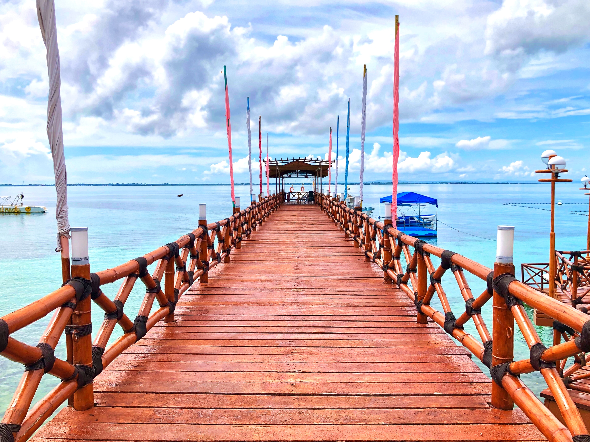
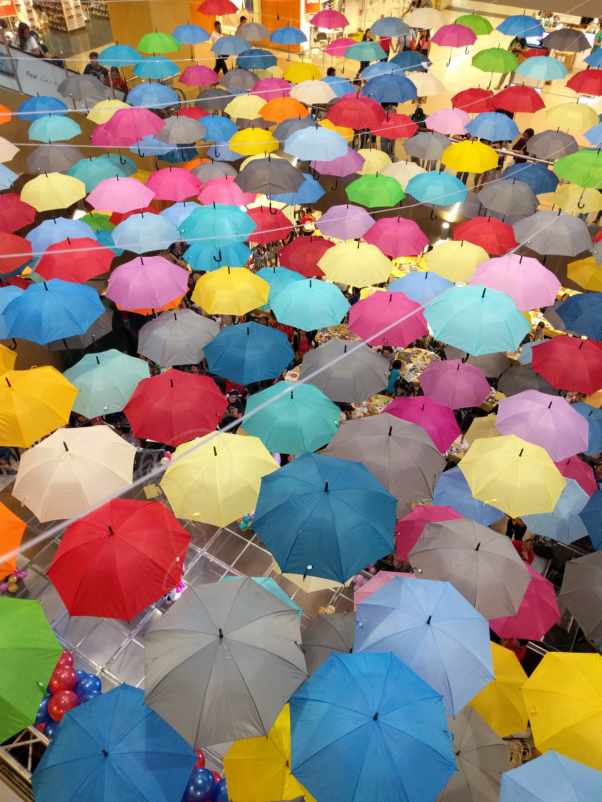
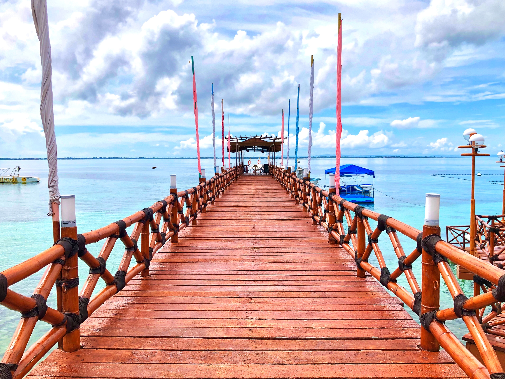
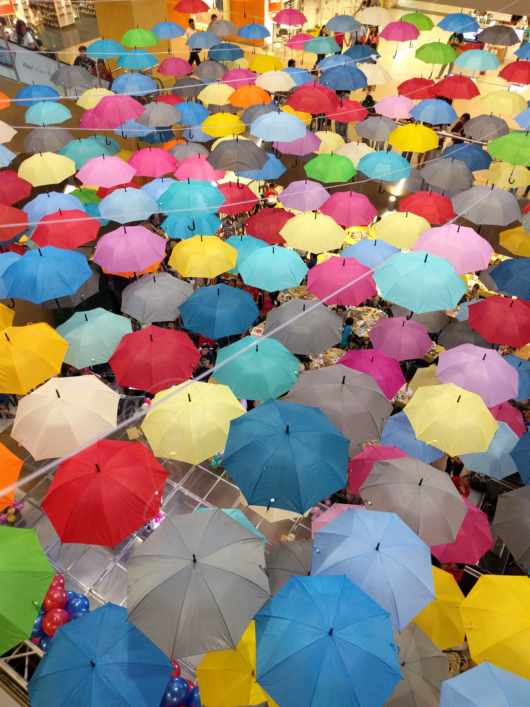

세부(타갈로그어: Lungsod ng Cebu, 세부아노어: Dakbayan sa Sugbo, 영어: Cebu City)는 필리핀 중부 세부주에 있는 도시이다. 세부주의 주도이며, 비사야 제도의 중심지이다. 수도 마닐라보다 오래된 필리핀 최초의 식민지 도시로, 인구는 2010년을 기준으로 866,171명이며, 주변 지역을 포함하여 대도시권인 메트로 세부를 형성하며, 인구는 250만에 달한다.
세부는 스페인의 식민지 이전부터 항구 도시였다. 중국(명) 외에 동남 아시아의 여러 나라와 거래를하고 있었으며 이때 이슬람교도 전해졌다.
1521년 4월 7일, 페르디난드 마젤란이 세부에 도착했다. 그는 세부의 영주였던 라자 후마본 (Rajah Humabon)을 회유했다. 라자 후마본과 왕비, 주민들은 그 해 4월 14일 세례를 받고
처음 필리핀 기독교인이 되었다. 마젤란은 지방 영주 간의 싸움에 개입하여 기독교로 개종시켰지만, 이 섬을 스페인 영토로 선언할 수 없었다. 4월 27일 막탄섬에서 마젤란을 따르지 않았던 라푸라푸가
이끄는 군대와의 전투가 일어나 전사했기 때문이다.
1565년 4월 27일, 정복자 미겔 로페스 데 레가스피는 병사들과 성 아우구스치노 수도회 및 프란시스코 회로부터의 수도사와 함께 상륙해, 라자 후마본 왕의 아들, 라자 투 파스왕의 마을을 공격하여
점령하여 필리핀 식민지화의 최초의 발판을 쌓아 올렸다. 마젤란이 산 미구엘로 개명한 세부의 마을은 레가스피에 의해서 비야 델 산티시모 논브레 데 헤스스(Villa del Santisimo Nombre
de Jess)라고 다시 개명되어 마닐라가 식민지화 될 때까지의 6년간, 세부 시는 새로운 스페인 식민지의 수도가 되었다. 그들은 이 해안에 멕시코와의 무역이나 현지인과의 전쟁에 대비한 항구 요새인 산
페드로 요새를 건설했고, 이것은 지금도 세부 시의 해안에 남아 있다.
 


